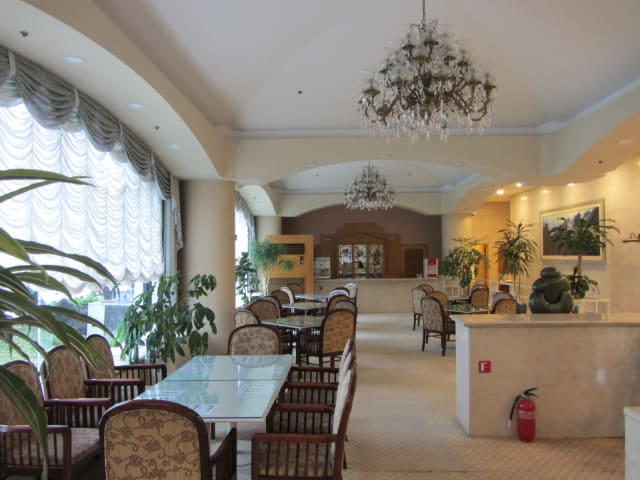

從龍潭公園冒風雨步行返回濟州島羅波羅酒店, 乘電梯回到房間, 濟州島所有行程正式宣佈全部結束了, 接著是往濟州港旅客碼頭, 然後搭乘下午 13:40 的渡輪往韓國本島西南面的木浦 (Mokpo 목포)。看看手錶, 約早上十時二十分, 按原定計劃, 我們是步行往濟州港旅客碼頭, 但看見外面仍然下著大雨, 唯有改乘計程車前往, 反正距離並不遠, 不會太貴的。
乘計程車往濟州港旅客碼頭
在房間用吹風筒吹乾了衣褲和鞋子, 於早上十一時離開房間, 乘電梯往一樓大堂, 辦理了退房手續, 服務員幫我們 CALL 了一輛計程車, 接著便在大堂等候, 在離開前再四處參觀。濟州島羅波羅酒店的大堂真是很大, 裝修也頗豪華。


濟州港旅客碼頭 購票大堂 順利買了往木浦船票
在大堂等了約十分鐘, 計程車便駛到酒店的大門外。登上了計程車, 沿途交通十分暢通, 約八分鐘便抵達我們熟悉的濟州港旅客碼頭, 車資是3,000韓元。
進入濟州港旅客碼頭大堂, 時間約早上十一時二十分。我們是搭乘下午13:40 的渡輪往木浦, 根據昨天售票處服務員的說話: 「在每班輪船起航前兩小時前才開始售票!」 現在離開始售票時間只有二十分鐘!
走往售票處, 最重要是先確定往木浦 (목포)的售票處, 是在 7、8 及 9 號窗口。
不敢離開太遠, 便在木浦售票處附近的椅子坐下來, 等了一會, 人潮開始湧現, 恐怕稍後開始售票時的情況十分混亂, 我們便定下策略: 我負責在椅子看守背囊, 她在售票處前等候。
約早上十一時四十分, 木浦售票處的燈亮起了, 她第一時間走到售票處前排隊, 其他的旅客看見, 連忙爭相湧上排隊, 情況果然頗為混亂, 不消幾秒鐘, 一條長長的人龍蜿蜒於大堂內。
哈哈~~~ 她竟然是第一名! 咁醒目! 讚啦!
購買船票是要出示護照的。很順利買了兩張下午13:40 往木浦的船票, 渡輪名稱是 Sea Star Cruise, 413 號室, 船票每位是32,300韓元。
買了往木浦的船票, 心情頓時輕鬆下來, 可以順利展開這旅程下半部的行程了!
濟州港旅客碼頭 二樓食堂午餐
根據資料, 從濟州島往木浦的航程約4小時30分, 到達木浦時差不多已經是傍晚六時半, 恐怕船上的餐點比較昂貴, 所以打算先吃完午餐才上船。
接著乘手扶電梯往二樓的食堂。面積十分寬敞舒適, 價錢也十分便宜。
我叫了一客嫩豆腐湯飯 (6,000 韓元), 她叫了一客韭菜煎餅 (7,000韓元)。
在售票處點了菜, 等了一會, 食物陸續送來。

這一餐的味道真是很好, 十分滿足, 結帳只是13,000韓元。想不到在離開濟州島前可以留下這美好回憶, 總算補償了在濟州島的一些不如意的行程, 可以為這韓國之旅的上半部劃上完滿的句號。